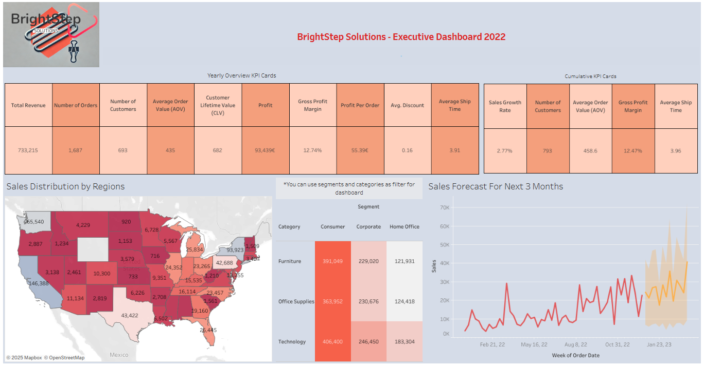
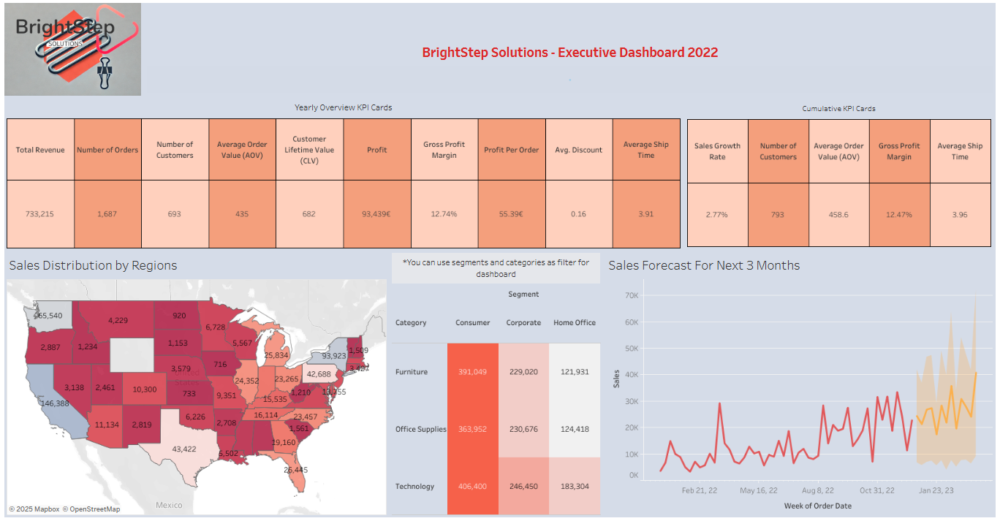

Birce SARI
Business Intelligence & Data Analytics Specialist | Data Storytelling Enthusiast
Business Intelligence & Data Analytics Specialist | Data Storytelling Enthusiast
I am a Business Intelligence Specialist with over 8 years of experience in data analytics, dashboard design, and project management. Passionate about transforming complex data into actionable insights and empowering teams to make informed decisions.


 

Click the dashboards for more detailed project descriptions or interactive views.
Zorlu Holding | 2022-2025
Improved KPI tracking across 50+ locations and reduced delays by 12%.
2020-2022
Delivered dashboards and predictive analytics solutions for clients in multiple industries.
Interested in working together or discussing a project? Let's work together!